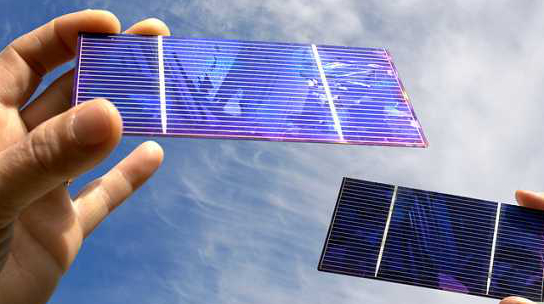

Since its inception in the 1880s, the technology behind the photovoltaic (PV) cell has evolved slowly. By the mid 1930s PV cells were achieving efficiency (conversion of incident light to electrical energy) of approximately 1%. By the mid 1950s this had increased to about 5%. Recent developments have seen efficiencies over 20%.
During this slow march of improvements the basic concepts have remained the same: Light enters the cell. Photons are absorbed by a semiconductor and cause a flow of electrons. The flow is only permitted in one direction. The cells are organised into an array, generating a usable current.
Allowing light to enter the cell, and electricity to exit, limits the materials that can be used, as few have the necessary properties. Copper indium gallium selenide and gallium arsenide are two materials which demonstrate these properties. However, obtaining them can be an expensive process.
 The development of a new carbon-based transparent conductor may present an alternative. Northwestern University in the United States, has come up with a novel solution: an application of nano-technology to create a flexible material that is both transparent and conductive. The use of carbon, rather than rare elements such as indium and gallium will help to reduce the cost of production. Traditional materials used in PV cells are generally brittle and as a result are limited in their form and use. The single-walled carbon nanotubes, on the other hand, open up a new range of design opportunities.
Mark C. Hersam and Tobin J. Marks, leading the research into this material have noted that it could have some interesting applications. You could imagine flexible solar panels becoming common-place items; a cap that could use the energy to cool your head, a laptop sleeve that could charge your computer when not in use, or curtains that contribute to your home energy supply. The possibilities are limited only by our creativity!
By Dave Collier
28 Sep 2011
Image author:Solar Cells © Lason